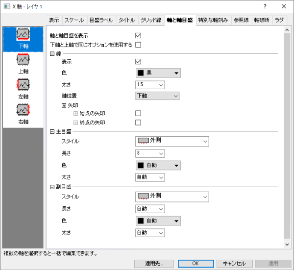

Origin 2017以降複数レイヤグラフのレイヤ切り替えにレイヤリストを使用できます。

このタブでは軸と軸目盛の制御を行います。ここには線、目盛スタイルや位置が含まれます。2Dグラフでは、下と上（左と右）方向でそれぞれ編集できます。3Dのグラフでは、X,Y,Zそれぞれの方向で2つの軸を表示させることができます、つまり6つ（前/後、左/右、下/上）で編集可能です。
|  |
| ほとんどの2D/3Dグラフにおける軸と軸目盛 |
Origin 2017以降複数レイヤグラフのレイヤ切り替えにレイヤリストを使用できます。
|
このチェックボックスを選択することで、選択した軸の線と軸目盛を表示します。軸と軸目盛を非表示にするにはチェックを外します。
このチェックボックスを使用すると、下と上（左と右）軸で同じタイトルオプションを使用します。このボックスにチェックが入っていると下軸と上軸（左軸と右軸）の設定が共有されます。この場合は下軸のみを編集する必要があります。
このチェックボックスを選択して、選択されている軸の線を表示します。
このドロップダウンリストから軸と軸目盛の色を選択します。自動では、プロットの塗りつぶしで設定している色より濃い色を使用します。プロットの塗りつぶしの色を「なし」または「自動」に設定すると、Originは境界色より濃い色を使用します。折れ線グラフのように塗りつぶしが無い場合は、線の色に従います。
軸および軸刻みに対する線の太さ(ポイント単位、1ポイント＝1/72インチ)を入力または選択します。 |-
| 下軸、上軸、左軸、右軸 | 軸をデフォルトの位置に移動させます。 |
|---|---|
| 下軸(上軸、左軸、右軸など）からの% | デフォルトの位置からの軸のオフセットを指定します。バーセント/値テキストボックスに、軸の長さに対するパーセント値を入力します。2Dグラフレイヤの軸では、正の値を入力することでページの中心から離れる方向に移動し、負の値を入力することでページの中心に軸が移動します。 |
| 位置= | 指定したXまたはYスケール値に軸を位置づけます。パーセント/値 テキストボックスにXまたはYの値を入力します。 |
| 下軸、左軸、正面軸 | 軸をデフォルトの位置に移動させます。 |
|---|---|
| 下軸(左軸、正面軸)からの% | デフォルトの位置からの軸のオフセットを指定します。バーセント/値テキストボックスに、軸の長さに対するパーセント値を入力します。2Dグラフレイヤの軸では、正の値を入力するページの中心から離れる方向に移動し、負の値を入力するとページの中心に向かって軸が移動します。 |
| 位置= | 指定したXまたはY、Zスケール値に軸を位置づけます。パーセント/値 テキストボックスにX,YまたはZの値を入力します。 |
2D,3D両方のグラフにおいて現在の軸を矢印として表示するかどうか指定します。
始点の矢印または終点の矢印チェックボックスは、軸の始点または終点の形状を矢印にします。 下の3つのドロップダウンリストから、矢印の形状、幅、長さを指定できます。
オフセット(%)編集ボックスは、軸の長さの%値で、軸フレームよりも長く矢印を伸ばすことができます。
このドロップダウンリストで主（副）目盛のスタイルを指定します。
副目盛の長さ(ポイント単位、1ポイント＝1/72インチ)を入力または選択します。
自動: 副目盛は、主目盛の半分の長さになります。
ドロップダウンリストで主/副刻みの色を指定します。
副目盛の太さ(ポイント単位、1ポイント＝1/72インチ)を入力または選択します。